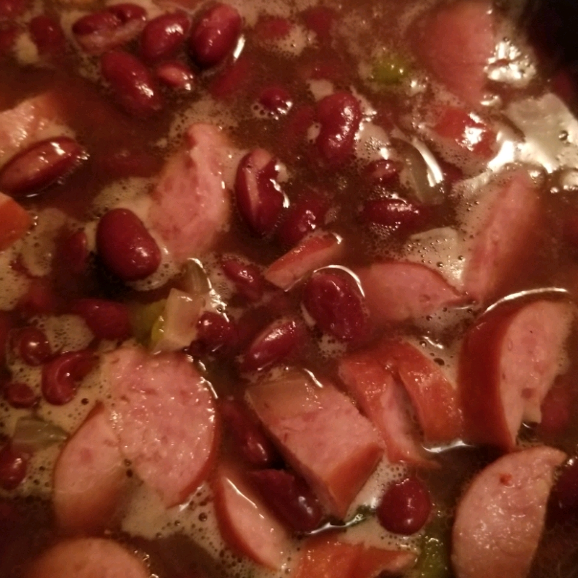

Beans and Rice

Description
Combine sausage, half the onion, half the green bell pepper, half the jalapeno pepper, water, chicken bouillon, garlic and herb seasoning, Cajun seasoning blend, red pepper flakes, and bay leaf in a large stockpot; Bring to boil and cook, stirring occasionally, until liquid is reduced by half, 15 to 20 minutes.
Mix kidney beans, tomatoes, remaining onion, remaining green bell pepper, and remaining jalapeno pepper into the sausage mixture; season with salt. Bring to a boil, reduce heat, and simmer until kidney bean mixture is thickened, 15 to 20 minutes. Remove and discard bay leaf.
Ingredients:
- 1 pound smoked sausage
- 1 onion,chopped,divided
- 1 green pepper,choped,divided
- 1 jalapeno pepper,finely diced,divided
- 2 cups water
- 2 cups chicken bouillon
- 1 tablespoon salt-free garlic and herb seasoning
- 1 tablespoon Cajun seasoning blend
- 1 tablespoon red papper flakes
- 1 bay leaf
- 3 cans kidney beans,drained and rinsed
- 1 can diced tomatoes
- salt to taste
- 3 cups cooked white rice
Steps:
- step 1:Combine sausage, half the onion, half the green bell pepper, half the jalapeno pepper, water, chicken bouillon, garlic and herb seasoning, Cajun seasoning blend, red pepper flakes, and bay leaf in a large stockpot; Bring to boil and cook, stirring occasionally, until liquid is reduced by half, 15 to 20 minutes.
- step 2:Mix kidney beans, tomatoes, remaining onion, remaining green bell pepper, and remaining jalapeno pepper into the sausage mixture; season with salt. Bring to a boil, reduce heat, and simmer until kidney bean mixture is thickened, 15 to 20 minutes. Remove and discard bay leaf.
- step 3:Spoon 1/2 cup cooked rice into 6 serving bowls; top with kidney bean mixture.